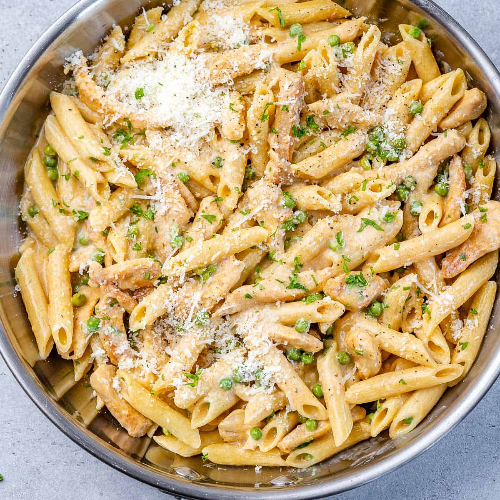

Chicken Carbonara

Chicken Carbonara
This is a creamy chicken pasta dish, prepared with cheese pan grease and eggs. It has bacon, chicken, pasta of your choosing, and is mild and flavorful with no spice in the reciper, unless you choose to add your own.
- Boneless Chicken Breast
- Parmegianno Regioanno Cheese
- Eggs
- Bacon
- Pasta of your choice
- Season the chicken, with at least salt and pepper.
- Sear the chicken in a hot pan, preferably cast iron.
- After the chicken is seared, bake at 350 degrees F for ~30 minutes
- While the chicken.................... is in the oven, cut the bacon into small bits before cooking
- But the bits into a pan, turn the heat on, and let cook
- Break 3 eggs into a bowl, and grate the parmigianno regianno over it until the mixture looks somewhat like an omelette, add cheese or eggs as neccessary depending on the serving size.
- Put a pot of water on the stove, salt it, and bring to a boil. Add pasta when boiling
- Once the chicken and bacon are cooked, set them aside. Cut the chikcen into bit sized pieces.
Be sure to save the leftover grease in the pan, asa well as pasta water.
- Add the ingredients together in a frying pan, add pasta water to a thickness of your liking, and stir well.
- Serve and enjoy!